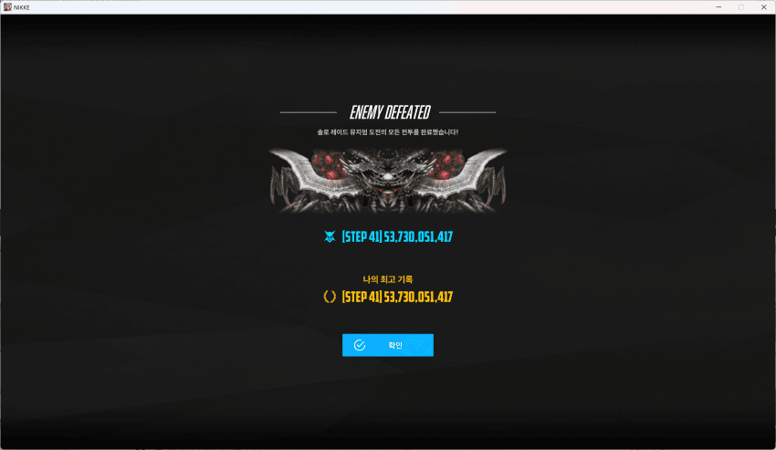
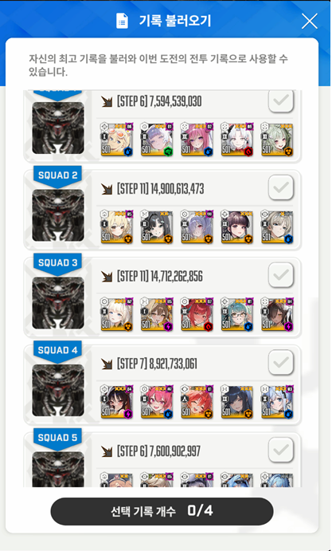

비데가 들어와서 지난 섬북이때 키운걸로 도전해봄
관통주간+ 철갑에 큰 뜻이 있는 니붕이들은 481에도 충분히 40단 가능할것같슴
간략하게 써보자면
1덱 샷건딕
바소다 111 깡통장비로 속저용으로만 씀(777 3우정도면 무조건 바소다 버스트ㄱ)
충격파는 막판 한번 빼고 전부 탱킹하고 독은 엄폐해줌
충격파 맞기전에 재장전 미리 잘해주기
2덱 리민프비데덱
이브 10710 4우 프리카 774 (장탄있으면 좋고 없어도 지장x)
첫버스트 프이브일때 비데 머신건 다쓰고 다음 비데 버스트 올 동안 저격으로 변경
개인육성마다 다를텐데 첫 충격파는 엄폐하고 첫 독뎀은 민프로 버팀
(다음에 비데에게 공높딜이 꽂힐테니 못버티면 비데만 독때 엄폐)
501이상은 크리 잘보면 12단계도 가능할듯?
리트하면 될 것 같았는데 40단이 목표라 대충 시마이
3덱 섬북이때 익숙한 라피덱
나가 774 장비깡통 프바 10107
이 덱은 아무생각없이 하면됨 크라운 돌니스 라피 장전만 신경
4덱 목마앵레레
레드호동 477 우코 50대 레이븐 717에 4우 (섬북이때 쌀먹육성)
호동님 스초하고 어떻게든 스칩아껴보려고 477로 그냥 진행했는데
잘 키운 레레덱이면 스텝 9~10도 되지않을까싶음
2페전까지 충격파 탱킹하다 독은 목마앵믿고 맞딜
2페때도 충격파는 탱킹하고 독뎀은 맞딜
레후1버 썼을때 충격파 엄폐하고 최대한 버스트 박는식으로 함
5덱 애미더블헬름 각설덱
바이드 747 헬름 171 깡통
각설버스트때 파츠 잘 부숴주고
충격파 탱킹하고 독 엄폐하는 식으로 최대한 완주를 목표로 함
헬름대신 수말차써봤었는데 쌀먹육성이라 편한 플레이를 위해 헬름 기용
비데덕분에 울라리 뮤지엄 진짜 할만해졌다!